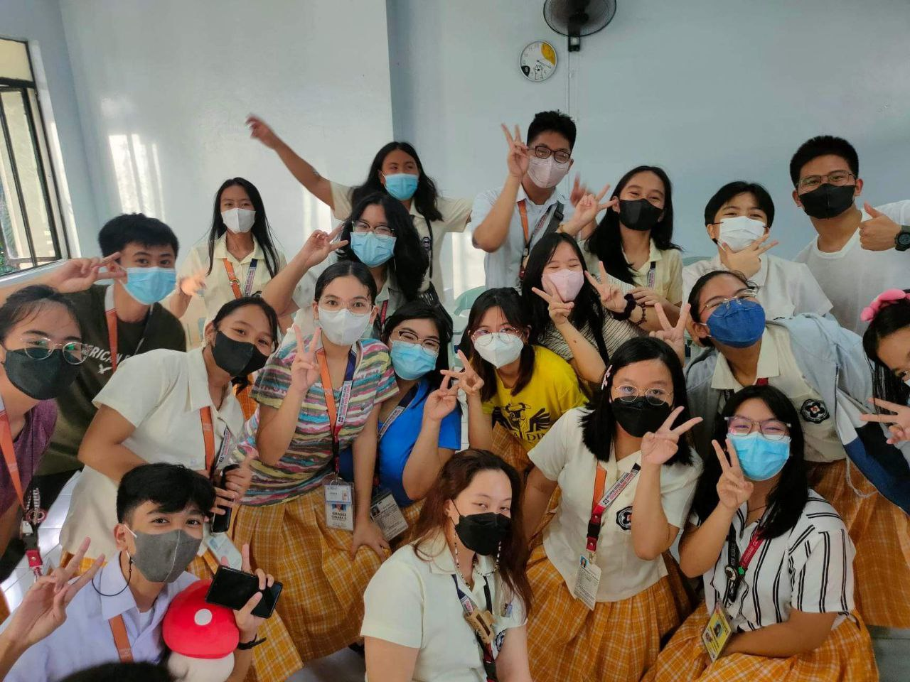
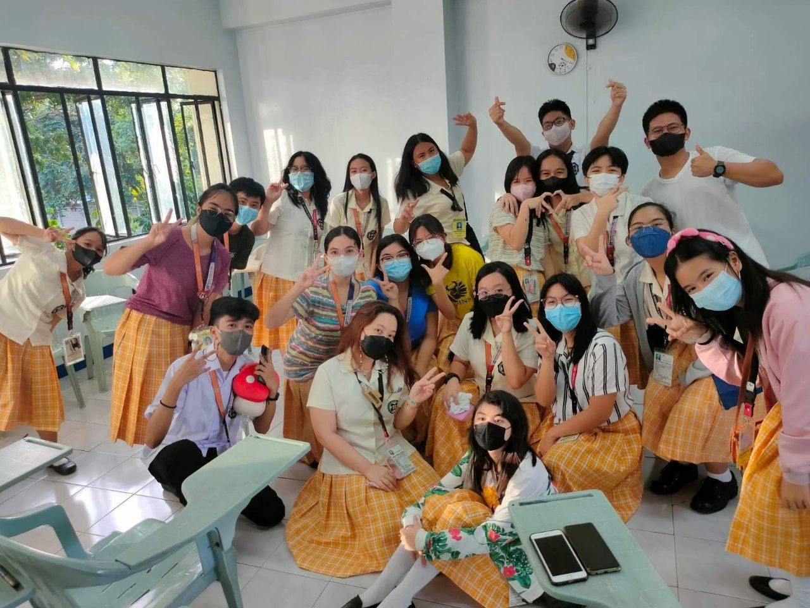

"I am Enough. I am Loved. I am Worthy."
Organization Background:
Peer Facilitators is a club under the management of the guidance office of the Philippine Science High School - Southern Mindanao Campus. It consists of students who are trained to help the guidance office in situations of need. These students will serves as the soldiers and / or frontliners of the guidance office.
During the School Year 2022-2023, the Peer Facilitator Club of the PSHS - SMC was under the management of Ma'am Emmie Rose Enanoria.
She was the guidance counselor of the grades 7 and up!
She no longer handles the Peer Facilitator as of now, but it is being handled by
Ma'am Ron, with the help of our club's president and other officers!
Although this club is no longer part of the listed clubs in the ALA, it is still active. If you had joined Peer Facilitators, your already a member bounded by a
contract for your entire Pisay Journey!
You can join Peer Faci whilst joining or participating in other clubs!


The organization has done a lot of things so far. During the 2022-2023 administration; the Peer Facis were able to host a seminar for the Meet and Greet of our school's Psychologist!
The organization also held their peer culmination in an all boys orphanage and is continuously providing support to this orphanage!